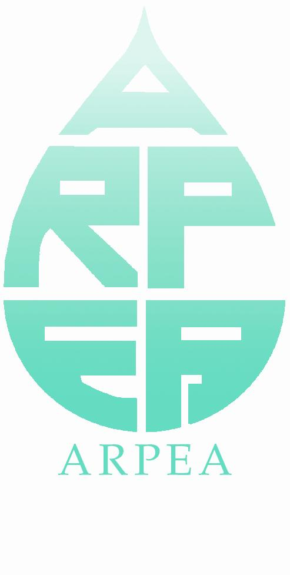

CAS Umweltmanagementsysteme
|
|
En partenariat avec |
|
Der Zertifikatslehrgang richtet sich an mittlere und höhere Führungskräfte in Unternehmen und öffentlicher Verwaltung, die Umweltmanagement in die Unternehmensführung integrieren möchten. Der CAS erlaubt den Teilnehmenden konkrete Massnahmen sowie eine Umweltstrategie entwickeln, um die Umweltperformance ihres Unternehmens oder ihrer Verwaltungseinheit zu verbessern. Der Lehrgang erlaubt den Teilnehmenden,
|
|

- Kriterien und Indikatoren für die Umweltperformance zu entwickeln und in das Managementsystem zu integrieren;
- sowie konkrete Massnahmen im Betrieb oder bei der Entwicklung neuer, umweltfreundlicher Technologien und Produkte in die Tat umzusetzen.
Die Weiterbildung verbindet Theorie mit Managementmethoden und Erfahrungsaustausch. Die Zertifikatsarbeit (mindestens 100 Stunden) erlaubt den Teilnehmenden ein konkretes Projekt im Unternehmen zu erarbeiten.
Ablauf
[img_assist|nid=231|title=|desc=|link=none|align=center|width=800|height=324.85]
Stärke und Besonderheit des CAS
Der CAS erlaubt den Teilnehmenden, die Umwelteinwirkungen prozessorientiert anzugehen und mit Hilfe von messbaren Kriterien und Indikatoren in das Managementsystem zu integrieren.
Mehrwert des CAS für Unternehmen und Teilnehmende
Während der Zertifikatsarbeit arbeiten die Teilnehmenden an einem konkreten Projekt in ihrem Unternehmen oder ihrer Verwaltungseinheit um die Umweltperformance zu verbessern. Dieses Projekt ist ein echter Mehrwert, da es dem Unternehmen erlaubt, auf einem Markt zu bestehen, der von immer höheren Anforderungen in Bezug auf die Verantwortung gegenüber der Umwelt entlang der gesamten Wertschöpfungskette gekennzeichnet ist.
Der CAS ermöglicht
- den Aufbau oder die Optimierung eines Umweltmanagementsystems;
- Ressourcen- zu verbessern, Kosten und Risiken zu senken;
- die Identifizierung von Chancen für neue Produkte und umweltfreundliche Technologien;
- eine Positionierung auf den Märkten von morgen;
- eine höhere Motivation der Mitarbeitendenden durch den Erwerb von neuen beruflichen Kompetenzen.
Zertifikat
Der erfolgreiche Besuch des Lehrgangs wird mit einen Certificate of Advanced Studies CAS bescheinigt (10 ECTS-Punkte). Beim Besuch von Einzelmodulen wird eine Teilnahmebescheinigung ausgestellt.
Der CAS wird von folgenden Organisationen empfohlen:
|
|
|
 | |
Ihre Mitglieder erhalten einen Rabatt von CHF 300.- auf die Teilnahmegebühr.